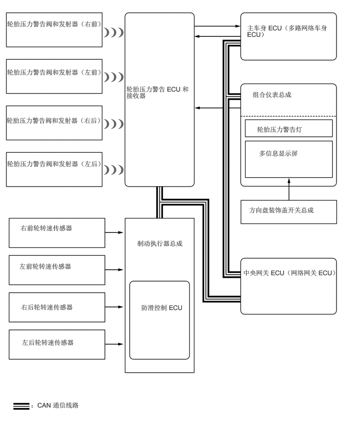

0.146,0.417 2.365,0.875
2.208,0.448
10
false
轮胎压力警告阀和发射器（右前）
0.146,1.427 2.396,2.083
2.24,0.646
10
false
轮胎压力警告阀和发射器（左前）
0.135,2.438 2.354,2.99
2.208,0.542
10
false
轮胎压力警告阀和发射器（右后）
0.146,3.344 2.417,3.979
2.26,0.625
10
false
轮胎压力警告阀和发射器（左后）
2.646,1.781 4.042,2.313
1.385,0.521
10
false
轮胎压力警告 ECU 和接收器
5.177,0.5 6.948,1.063
1.76,0.552
10
false
主车身 ECU（多路网络车身 ECU）
5.292,1.896 7.167,2.396
1.865,0.49
10
false
组合仪表总成
5.385,2.625 7.146,2.948
1.75,0.313
10
false
轮胎压力警告灯
5.219,4.313 7.167,4.635
1.938,0.313
10
false
方向盘装饰盖开关总成
5.427,3.125 7.052,3.427
1.615,0.292
10
false
多信息显示屏
2.875,5.01 3.927,5.594
1.042,0.573
10
false
制动执行器总成
2.958,6.354 4.604,7.146
1.635,0.781
10
false
防滑控制 ECU
0.427,4.688 2.01,5.073
1.573,0.375
10
false
右前轮转速传感器
0.406,5.49 1.99,5.875
1.573,0.375
10
false
左前轮转速传感器
0.438,6.344 2.021,6.729
1.573,0.375
10
false
右后轮转速传感器
0.458,7.083 2.042,7.469
1.573,0.375
10
false
左后轮转速传感器
0.646,8.396 2.646,8.708
1.99,0.302
10
false
：CAN 通信线路
5.094,5.625 7.167,6.177
2.063,0.542
10
false
中央网关 ECU（网络网关 ECU）